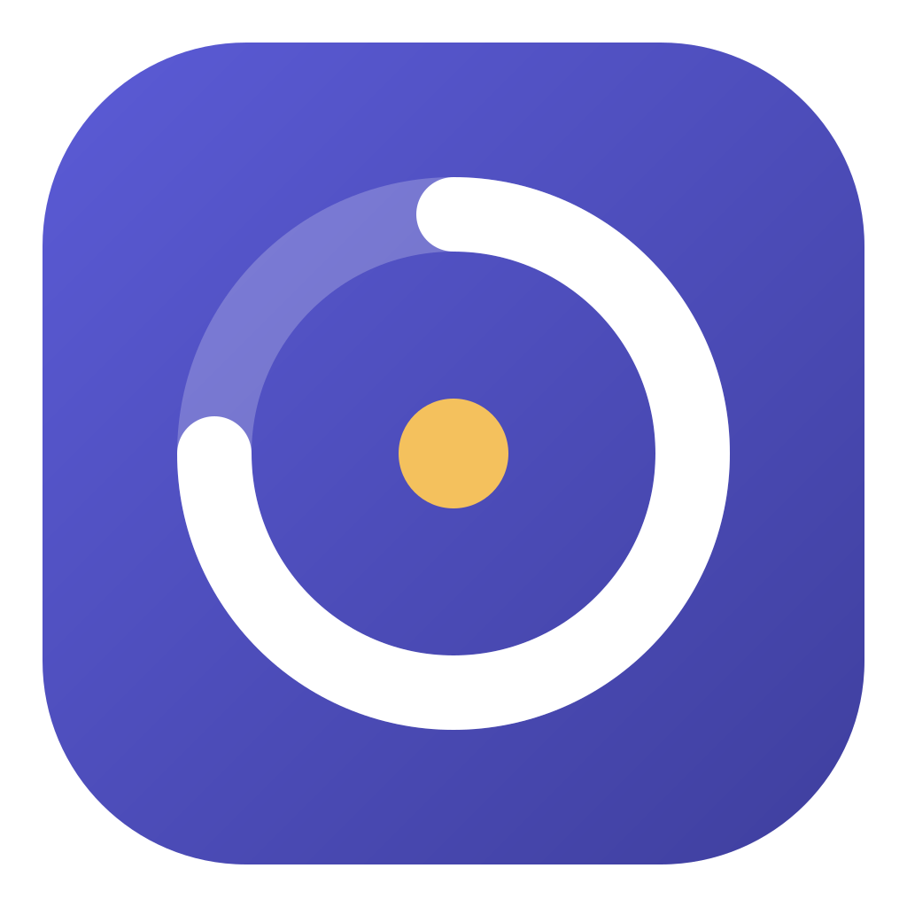

<!doctype html>
<html lang="pt-BR">
<head>
<meta charset="utf-8">
<meta name="viewport" content="width=device-width,initial-scale=1">
<title>ritmo</title>
<link rel="stylesheet" href="estilo.css">
</head>
<body>
<aside>
  <div class="marca">ritmo</div>
  <button class="nav-item ativo" data-aba="hoje">
    <svg viewBox="0 0 24 24" fill="none" stroke="currentColor" stroke-width="1.8" stroke-linecap="round"><circle cx="12" cy="12" r="4"/><path d="M12 2v2M12 20v2M4.9 4.9l1.4 1.4M17.7 17.7l1.4 1.4M2 12h2M20 12h2M4.9 19.1l1.4-1.4M17.7 6.3l1.4-1.4"/></svg>Hoje</button>
  <button class="nav-item" data-aba="foco">
    <svg viewBox="0 0 24 24" fill="none" stroke="currentColor" stroke-width="1.8"><circle cx="12" cy="12" r="9"/><circle cx="12" cy="12" r="5"/><circle cx="12" cy="12" r="1.5" fill="currentColor"/></svg>Foco</button>
  <button class="nav-item" data-aba="semana">
    <svg viewBox="0 0 24 24" fill="none" stroke="currentColor" stroke-width="1.8" stroke-linecap="round"><rect x="3" y="5" width="18" height="16" rx="3"/><path d="M3 10h18M8 3v4M16 3v4"/></svg>Semana</button>
  <button class="nav-item" data-aba="fechamento">
    <svg viewBox="0 0 24 24" fill="none" stroke="currentColor" stroke-width="1.8" stroke-linecap="round" stroke-linejoin="round"><path d="M20 14.5A8 8 0 1 1 9.5 4a6.5 6.5 0 0 0 10.5 10.5z"/></svg>Fechar o dia</button>
  <div class="espaco"></div>
  <div class="relogio-lateral" id="relogio">--:--</div>
  <div class="data-lateral" id="dataLateral"></div>
  <button class="nav-item" id="btnWidget">
    <svg viewBox="0 0 24 24" fill="none" stroke="currentColor" stroke-width="1.8" stroke-linecap="round"><rect x="2" y="4" width="20" height="16" rx="3"/><rect x="12" y="11" width="7" height="6" rx="1.5" fill="currentColor" stroke="none"/></svg>Widget</button>
  <button class="nav-item" data-aba="ajustes">
    <svg viewBox="0 0 24 24" fill="none" stroke="currentColor" stroke-width="1.8" stroke-linecap="round"><path d="M4 7h10M18 7h2M4 17h4M12 17h8"/><circle cx="16" cy="7" r="2"/><circle cx="10" cy="17" r="2"/></svg>Ajustes</button>
</aside>
<main>
  <div id="aviso"></div>
  <section class="pagina ativo" id="hoje"></section>
  <section class="pagina" id="foco"></section>
  <section class="pagina" id="semana"></section>
  <section class="pagina" id="fechamento"></section>
  <section class="pagina" id="ajustes"></section>
</main>
<div class="fundo-modal" id="fundoModal"><div class="modal" id="modal"></div></div>
<div id="yt"></div>
<div class="toast" id="toast"></div>
<script src="app.js"></script>
</body>
</html>
